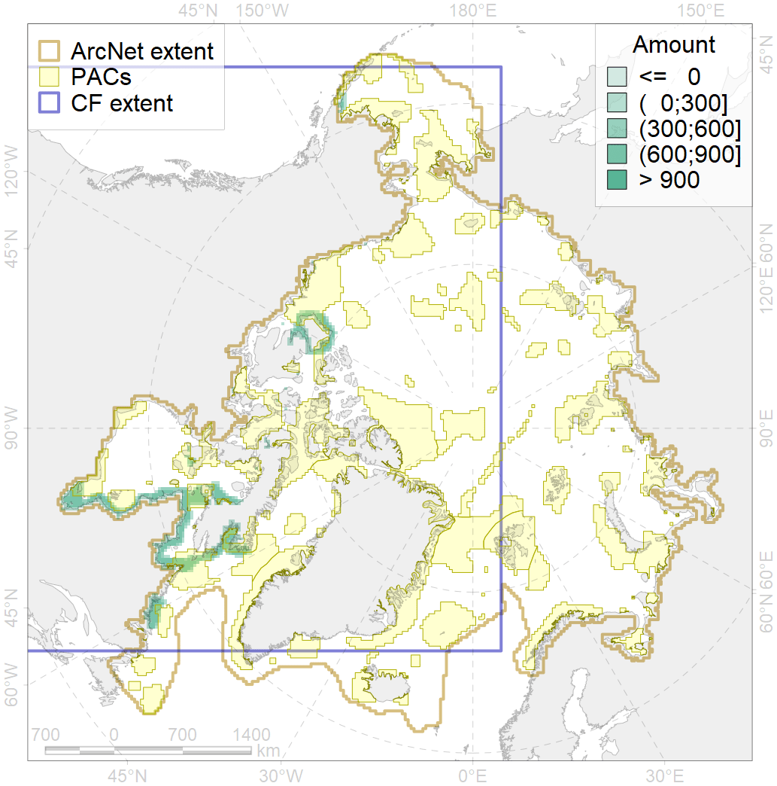
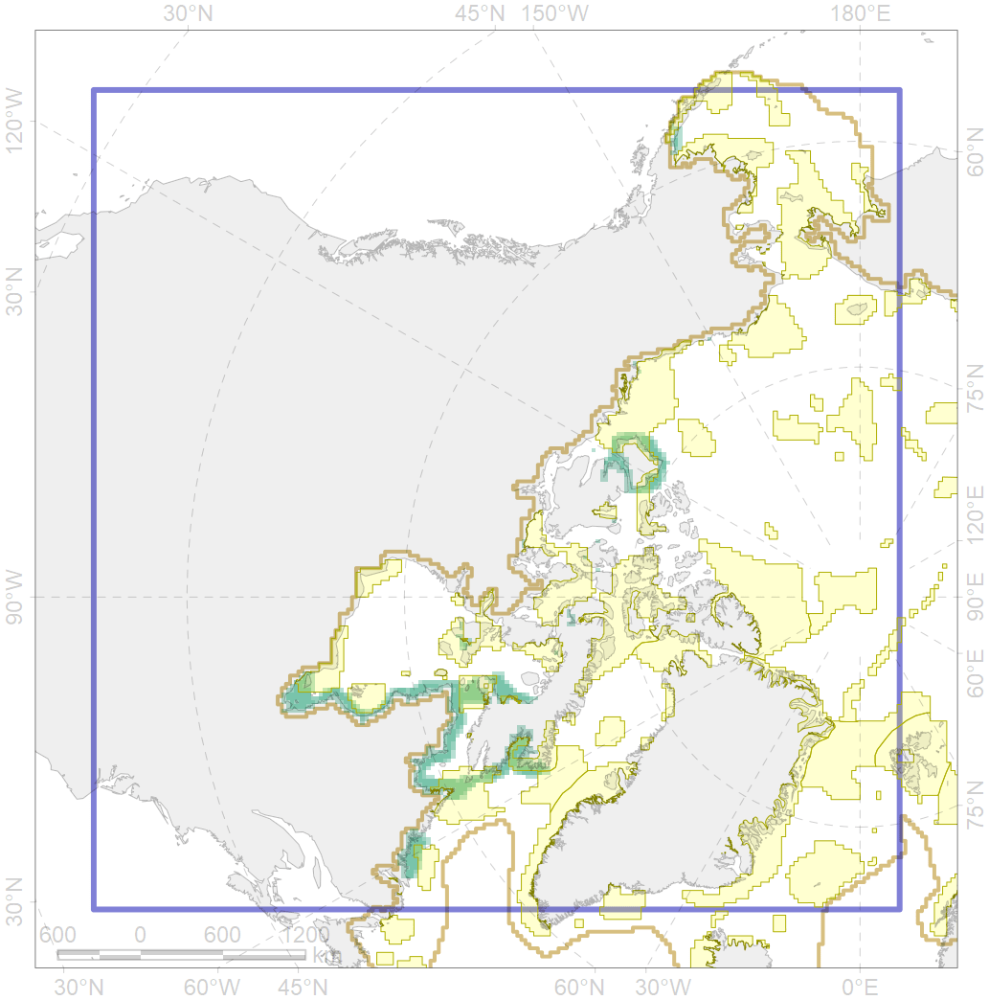

4035

| CF ID | 4035 |
| CF Name | Feeding area of the Lake trout (Salvelinus namaycush) |
| Time Period | 1950-2010s |
| Source(s) | Scott, Crossman, 1973; Coad, Reist, 2018 |
| Seasonality | June-October |
| Depth Horizon | 0-60 |
| Methodology | Compiled from literature sources based on field observations |
| Author Name | N. Chernova |
| Notes | |
| Conservation Target Set in the Scenario | 0.144 |
| Conservation Target Achieved in the Scenario | 0.356 (Scenario: 247.5%) |
| PAC ID | Proportion in the PAC | Contribution to ArcNet Target Achievement | PAC’s Contribution to the Achieved Target |
|---|---|---|---|
| 1 | 0.1% | 0.9% | 0.4% |
| 45 | 0.3% | 1.4% | 0.6% |
| 46 | 5.5% | 33.0% | 13.3% |
| 62 | 4.4% | 26.8% | 10.8% |
| 63 | 1.8% | 8.3% | 3.3% |
| 65 | 0.0% | 0.0% | 0.0% |
| 66 | 0.0% | 0.0% | 0.0% |
| 67 | 0.7% | 4.9% | 2.0% |
| 70 | 3.1% | 14.5% | 5.9% |
| 71 | 1.0% | 5.1% | 2.1% |
| 73 | 7.3% | 47.2% | 19.1% |
| 74 | 0.6% | 3.2% | 1.3% |
| 76 | 10.3% | 63.5% | 25.6% |
| 77 | 1.6% | 7.9% | 3.2% |
| inner | 36.7% | 216.7% | 87.6% |
| outer | 61.5% | 30.7% | 12.4% |